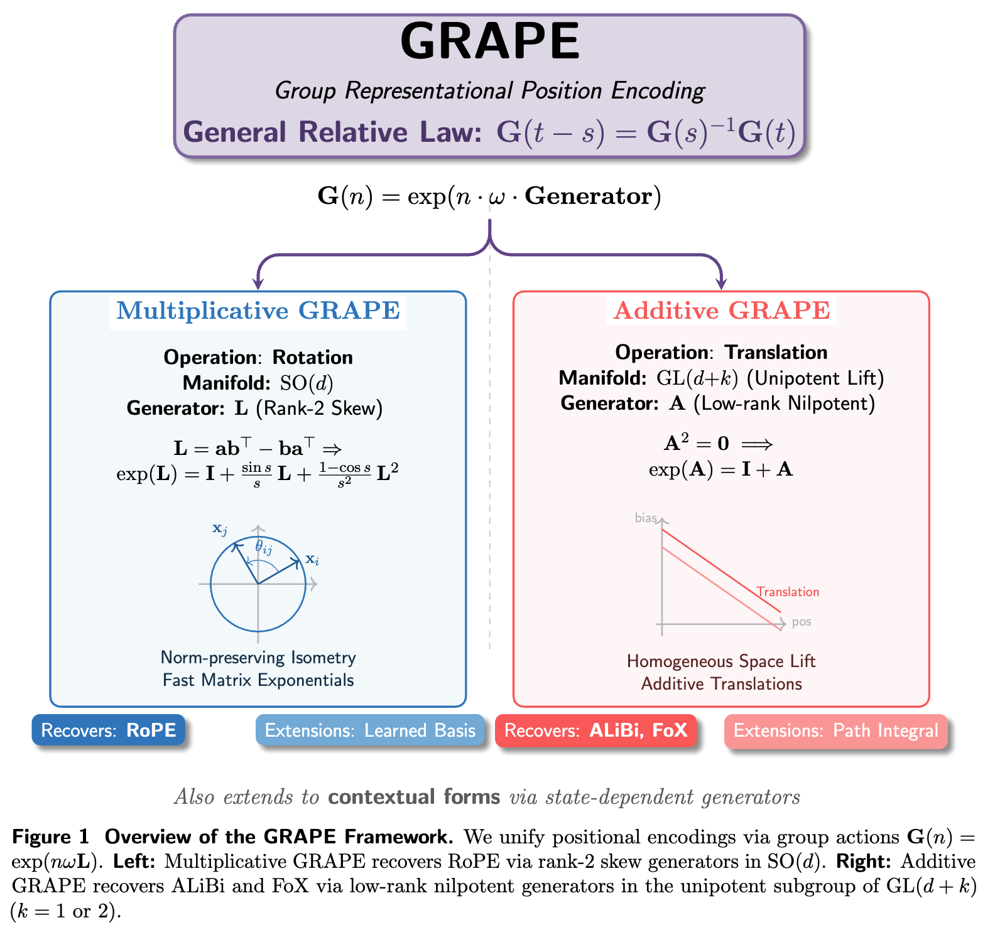

GRAPE unifies positional encodings via the General Relative Law of one-parameter subgroups: $$G(t-s) = G(s)^{-1}G(t).$$ Whether the action is a rotation in $SO(d)$ or a translation in a lifted $GL(d+k)$, this algebraic property ensures that attention scores depend solely on the relative offset $t-s$.

Figure 1: Visual overview of the GRAPE framework, contrasting rotational and unipotent actions.Multiplicative GRAPE
Operation: Rotation ($SO(d)$)
Generator: $L$ (Rank-2 Skew)
$$G(n) = \exp(n \cdot \omega \cdot L)$$ $$L = \mathbf{ab}^\top - \mathbf{ba}^\top$$
Recovers RoPE, Learned Basis, Non-commuting.
Additive GRAPE
Operation: Translation ($GL(d+k)$)
Generator: $A$ (Low-rank Nilpotent)
$$G_{\text{add}}(n) = I + n \cdot \omega \cdot A$$ $$A^2 = 0 \implies \text{Unipotent}$$
Recovers ALiBi, FoX, Path Integrals.